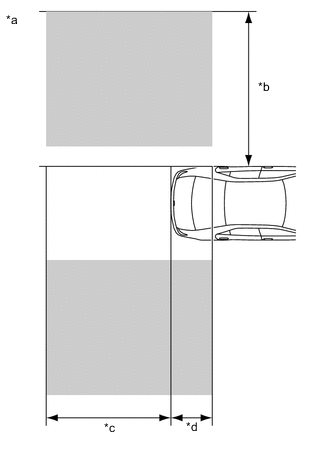
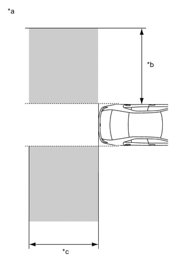
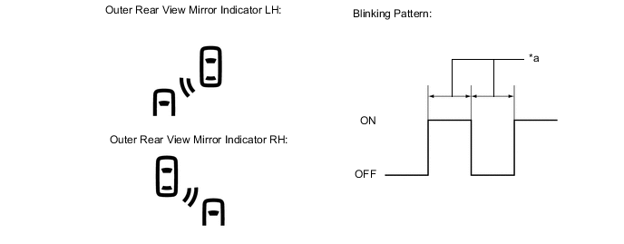
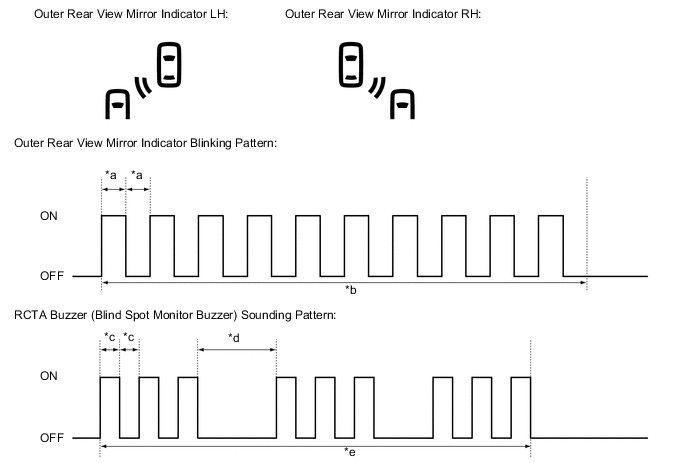

GENERAL
The blind spot monitor system has a blind spot monitor function and RCTA function.
Blind spot monitor function
The blind spot monitor function is a function that assists the driver when changing lanes.
The function uses quasi-millimeter wave radar to detect vehicles that are traveling in an adjacent lane in the area that is not reflected in the outer rear view mirror assembly. The function advises the driver of the existence of a vehicle by illuminating the outer rear view mirror indicator on the outer rear view mirror assembly.
If the turn signal switch is operated while the outer rear view mirror indicator on an outer rear view mirror assembly is illuminated, the indicator starts blinking to give additional warning to the driver.
RCTA function
The RCTA function is a function that informs the driver a vehicle is approaching from the left or the right at the rear of the vehicle. The function uses quasi-millimeter wave radar to detect the position and relative speed of other vehicles. When the function determines that a vehicle is approaching this vehicle, this function informs the driver using the outer rear view mirror indicators and blind spot monitor buzzer.
FUNCTION OF COMPONENTS
| Component | Function |
|---|---|
| Blind Spot Monitor Sensor |
|
| Outer Rear View Mirror Assembly
|
Turns on or blinks the indicator based on a signal from the blind spot monitor sensor. |
| Steering Pad Switch Assembly | Enables, disables or cuts off the operation of the blind spot monitor system by transmitting the switch operation signal to the meter circuit plate. |
| RCTA Buzzer (Blind Spot Monitor Buzzer) | Sounds based on a signal from the blind spot monitor sensor. |
| Meter Circuit Plate
|
|
| Main Body ECU (Multiplex Network Body ECU) | Sends the destination information and dimmer signal to the blind spot monitor sensor via CAN communication. |
| Skid Control ECU | Transmits a vehicle speed signal to the blind spot monitor sensor via CAN communication. |
| Hybrid Vehicle Control ECU | Sends a shift position signal (R) and HV flag signal to the blind spot monitor sensor via CAN communication. |
| Steering Sensor | Detects the angle of the steering wheel and sends the resulting signals to the blind spot monitor sensor via CAN communication. |
OPERATION DESCRIPTION
Operation description of the blind spot monitor function
Operation conditions
The blind spot monitor system is on.
Vehicle speed is more than approximately 16 km/h (10 mph).
Conditions in which a sensor can detect a vehicle
The blind spot monitor function indicates detection of a vehicle in the detection area when either condition is met:
When a vehicle is detected in an adjacent lane overtaking this vehicle.
When a vehicle is detected entering the detection area because it changed lanes.

| *a | Vehicles in the following areas can be detected: |
| *b | Within approximately 3.5 m (11.49 ft.) from the side of the vehicle |
| *c | Within approximately 3 m (9.85 ft.) behind the rear bumper |
| *d | Within approximately 1 m (3.29 ft.) forward of the rear bumper |
Detection area
Vehicles in the following areas can be detected:
Operation description of the RCTA function
Operation conditions:
The blind spot monitor system is on.
Reverse (R) is selected.
The vehicle speed is less than approximately 8 km/h (5 mph).
Conditions in which a sensor can detect a vehicle
The RCTA function indicates detection of a vehicle in the detection area when both conditions are met:
A vehicle is approaching this vehicle from diagonally behind.
The vehicle speed is approximately 8 km/h (5 mph) to 28 km/h (17 mph).

| *a | Vehicles in the following areas can be detected: |
| *b | Within approximately 5.5 to 20 m (18.04 to 65.62 ft.) from the side of the vehicle (detection area changes according to vehicle speed) |
| *c | Within approximately 6 m (19.69 ft.) behind the rear bumper |
Detection area
Vehicles in the following areas can be detected:
OPERATION OF OUTER REAR VIEW MIRROR INDICATOR AND RCTA BUZZER (BLIND SPOT MONITOR BUZZER)
Initial check
When the blind spot monitor system is on with the power switch on (IG), the outer rear view mirror indicator on each outer rear view mirror assembly illuminates for 3 seconds and the RCTA buzzer (blind spot monitor buzzer) sounds for 1 second.
When the power switch is turned from off to on (IG) with the blind spot monitor system on, the outer rear view mirror indicator on each outer rear view mirror assembly illuminates for 3 seconds.
Operation for each function
Operation for blind spot monitor function
When a sensor detects a vehicle in the blind spot area, the outer rear view mirror indicator on the outer rear view mirror assembly illuminates.
While the sensor is detecting a vehicle in the detection area and the indicator is illuminated, if the turn signal switch is operated, the outer rear view mirror indicator on the outer rear view mirror assembly starts blinking as shown in the illustration.

| *a | 0.125 seconds | - | - |
Operation for RCTA function
When all of the operation conditions for the RCTA function are met, the outer rear view mirror indicators on the outer rear view mirror assembly blink for 2.5 seconds and the RCTA buzzer (blind spot monitor buzzer) sounds for 2.3 seconds as shown in the illustration.

| *a | 0.125 seconds | *b | 2.5 seconds |
| *c | 0.1 seconds | *d | 0.4 seconds |
| *e | 2.3 seconds | - | - |
RCTA ICON OUTLINE
If a vehicle approaching from the right or left at the rear of the vehicle is detected, the icon will illuminate on the multi-information display.
| *a | Example | *b | Multi-information display |
| *c | RCTA Icon | - | - |